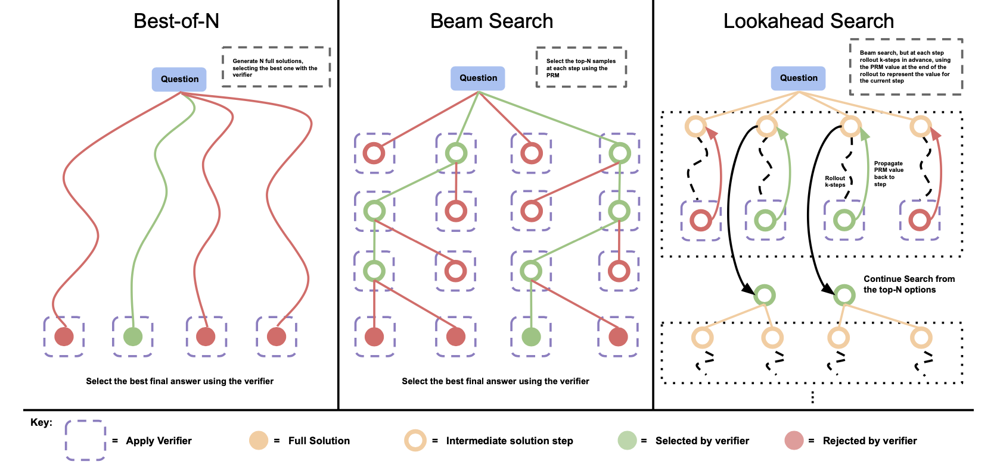
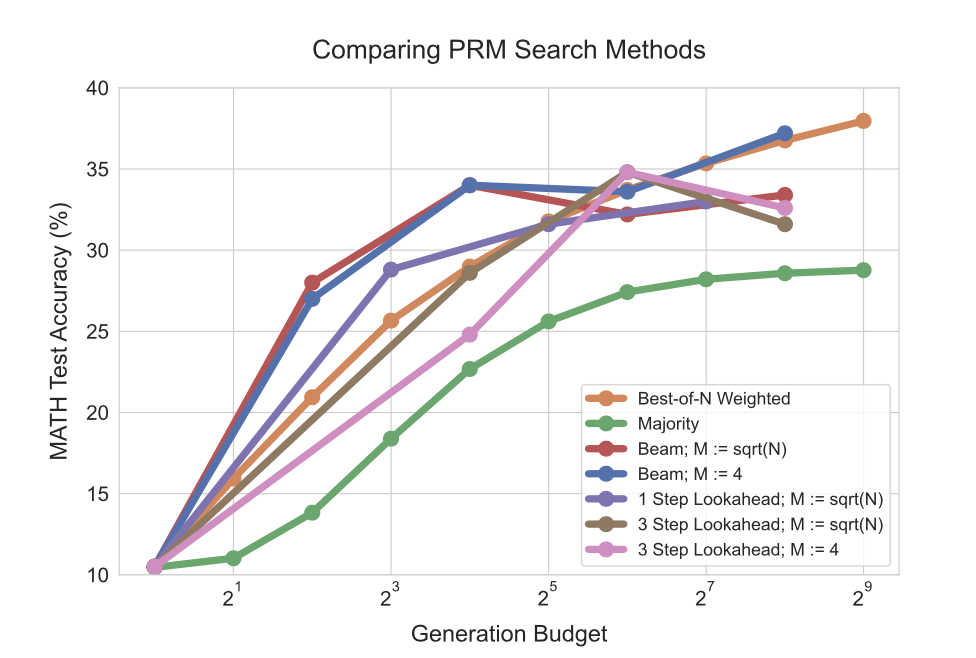

An unstructured log of miscellaneous thoughts.
Quotes
The following is a running list of quotes I found powerful when I came across them in books, podcasts, or other sources.
-
"You can't know everything, but you should convince yourself you can know anything."
- John Carmack
-
"We see an exponential curve but it's not because one thing is exponential, it's because we have hundreds of little sigmoids overlapped on each other that makes the general pattern look exponential"
- John Carmack
-
"Up to a point it is better to let the snags [bugs] be there than to spend such time in design that there are none (how many decades would this course take?)."
- Alan Turing
-
“Self-education is, I firmly believe, the only kind of education there is.”
- Isaac Asimov
-
"After thousands of years of compounding scientific discovery and technological progress, we have figured out how to melt sand, add some impurities, arrange it with astonishing precision at extraordinarily tiny scale into computer chips, run energy through it, and end up with systems capable of creating increasingly capable artificial intelligence."
- Sam Altman
-
"I wish I was weirder"
- George Hotz
Bookshelf
A list of books on my bookshelf.
-
A Brief History of Time
by Stephen Hawking
-
Brief Answers to the Big Questions
by Stephen Hawking
-
QED: The Strange Theory of Light and Matter
by Richard Feynman
-
Six Not So Easy Pieces
by Richard Feynman
-
A New Kind of Science
by Stephen Wolfram
-
The Computer and the Brain
by John Von Neumann
-
The Annotated Turing
by Charles Petzold
-
The Art of Computer Programming Vol. 1: Fundamental Algorithms
by Donald Knuth
-
The Art of Computer Programming Vol. 2: Seminumerical Algorithms
by Donald Knuth
-
Centralized and Distributed Operating Systems
by Gary J. Nutt
-
Design Patterns: Elements of Reusable Object-Oriented Software
by Erich Gamma, Richard Helm, Ralph Johnson, and John Vlissides
-
Clean Code: A Handbook of Agile Software Craftsmanship
by Robert C. Martin
-
Deep Learning with Python
by François Chollet
-
Building Machine Learning Powered Applications
by Emmanuel Ameisein
-
Probabilistic Robotics
by Sebastian Thrun, Wolfram Burgard, and Dieter Fox
-
Cracking the Coding Interview
by Gayle Laakmann McDowell
-
Hackers and Painters
by Paul Graham
-
Zero to One
by Peter Thiel
-
The Innovator's Dilemma
by Clayton Christensen
-
Obviously Awesome: How to Nail Product Positioning
by April Dunford
-
The General Theory of Employment, Interest and Money
by J.M. Keynes
-
Jobs
by Walter Isaacson
-
Elon Musk
by Walter Isaacson
-
The Idea Factory: Bell Labs and the Great Age of American Innovation
by Jon Gertner
-
Rafa
by Rafael Nadal
-
Open
by Andre Agassi
-
Meditations
by Marcus Aurelius
-
The Singularity Is Near
by Ray Kurzweil
-
Map and Territory
by Eliezer Yudkowsky
-
The Emotion Machine
by Marvin Minsky
-
The Society of Mind
by Marvin Minsky
O1: Modeling Chain of Thought Generation as a Reinforcement Learning Problem
October 14, 2024
In game-playing AI systems, pure neural networks perform considerably worse than versions of themself augmented with search. For example, AlphaZero [1] showed that the network without Monte-Carlo Tree Search (MCTS) was able to achieve an chess ELO rating of 2500. This is high, but not by any means superhuman. In contrast, the complete system with MCTS appended to the base model is able to achieve an ELO rating of 3500 which is ~600 points higher than the highest rating achieved by a human (Magnus Carlson). .
During training and at test time, MCTS is able to search through potential futures, evaluate the outcomes of making different decisions, and select ones that maximize expected reward. In addition to test-time search, AlphaZero is trained with self-play, a Reinforcement Learning technique that enables the system to simulate games by playing against previous versions of itself. This synthetically generated experience reduces the dependency of the system on human generated training data and encourages deeper exploration of the solution space. This deep exploration can lead to the discovery of novel solutions in situations that are rarely encountered (see move 37, AlphaGo v/s Lee Sedol).
Similarly, embedding search-based mechanisms within the larger system should help large transformer-based language models produce better answers to hard, reasoning dependent problems. Hypothetically, these methods would enable the same kind of evaluation of future outcomes, allowing models to carefully answer questions while assessing the vast solutions pace.
Recently, OpenAI introduced the their "reasoning model", O1. O1 is said to have been trained using reinforcement learning and to "think" before answering questions. According to benchmark results reported by OpenAI, O1 indicates a step-function improvement to the capabilities of language models at solving difficult problems in domains like math, science and computer programming. Further, the publicly released O1-preview and O1-mini display step function improvements on the LMSYS leaderboard, which for the last year has primarily seen incremental improvements to its max score, thus proving its versatility in multiple domains. As we've come to expect, OpenAI withheld information about the training process they use as well as their datasets. They go as far as to protect the chains of thought generated by models in response to prompts. Therefore, what we can know about O1 is limited to the information they released in their blog posts, system card, and speculation from the community based on existing literature.
I thought it would be a good exercise for me to review surrounding literature to try and interpret what OpenAI might be doing here, and that's what this "article" is going to be about.
The success of O1 comes as the culmination of success of three intuitions:
- Scaling the amount of compute available to the model at inference time leads to better answers to difficult questions
- Chain of thought prompting elicits reasoning in large language models [2], and can be viewed as a policy improvement operator [3]
- We can use reinforcement learning in conjunction with large reward models to build out a self-training process
In early 2022, OpenAI released Wei et al. 2022 [2]. This paper demonstrated that including few-shot examples of chains of thought within prompts to the model can significantly increase the accuracy of its outputs. Mechanistically, we know that "the model gathers answer tokens from the generated context, the question context, as well as the few-shot context" [4]. Few-shot CoT prompting has since been used as a reliable means of producing consistently higher quality outputs from language models across many domains. It is now standard practice to include samples that use CoT in datasets used to pre-train and fine-tune models.
While the description above would make it seem like this paper was the basis mainly for the first half of the second intuition listed above, I would argue that it fueled exploration along all of the other lines in that list. In this paper, the authors briefly mention that "additional compute can be allocated to more complex problems." While stated in passing (whether intentionally or not) this is a key insight we'll go into further detail on later on.
Shortly after the release of this paper, Zelikman et. al. released "STaR: Bootstrapping Reasoning with Reasoning" [7]. This paper introduces the STaR (Self-taught Reasoner) fine-tuning process that combines CoT prompting with outcome supervision to produce an iteratively improving model. STaR has a generally simple training process:
- Using few shot CoT, produce responses from an LLM given a set of prompts
- Using automation, check for correctness of the outputs
- Append correct solutions (including the CoT that led to them) to a dataset that can be used to fine tune the model
- In situations where the answers are incorrect, prompt the LLM the correct answer and have it reverse engineer a CoT that would have led to this output
- Include these in the dataset used for finetuning
- Iterate
The formal STaR algorithm from the paper
This method builds on the results from the OpenAI paper that CoT improves model outputs, and builds a process that allows for the model to iteratively teach itself to develop better chains of thought. This led to significant improvements over the benchmark results of the base model. For example, on the Commonsense Question Answering (CQA) dataset, the base model (GPT-J) achieved an accuracy of 20.5%, a direct finetune on the entire CQA training set achieved a 60% accuracy, STaR without the rationalizing step achieved a 68.8% accuracy, and STaR with the rationalizing step achieved 72.5% accuracy. It's noteworthy, that the base model was trained on 0% of the CQA dataset, the direct finetune used 100% of the training dataset, star without rationalization used 86.7% of the training dataset, and STaR with rationalization used 86.7% of the training dataset.
This paper also briefly formulates this training objective as an approximation to the RL policy gradient objective. It doesn't, however, use this insight to guide the training process, or dive deeper into a mathematical analysis of this approximation.
STaR builds the intuition that more inference time computation can lead to better results, and also defines a self-play like training procedure. That being said, there were a few obvious shortcomings of this method:
- As long as the final answer is correct, a sample is included in the iteratively generated fine-tuning dataset. This will include outputs where flawed CoT’s mistakenly yielded correct answers.
- The authors try to avoid wasting data by generating reverse engineered CoTs, but these could produce an exaggerated version of the problem in bullet 1. There's no means in the methodology of this paper to verify that the forced CoTs contain coherent reasoning.
- This paper ignores the learning benefit that could come from samples where the model fails entirely (true negatives).
The first two limitations mentioned are due to the fact that this method uses outcome-based supervision instead of process-based supervision. In outcome-based supervision, we only judge the correctness of the output of the model. In process-based supervision, we judge the correctness of each step in a CoT.
With these considerations in mind, in Lightman et al. 2023 [5], researchers from OpenAI train a Process-supervised Reward Model (PRM) by fine-tuning a base model. The PRM is trained on the outputs of a "generator" language model where each step of the CoT is labeled for correctness.
In this work, the authors focus solely on training a PRM, and not on fine-tuning the generator model that the PRM is judging. They do, however, state that "fine-tuning with RL is a natural next step." (Possibly foreshadowing O1?)
Before kicking off the PRM training process, they fine-tune the generator to ensure that it produces CoTs in a consistent, line delimited format. They kick off the training with an initial batch in the following way:
- Collect generator outputs
- Get human-annotation on these outputs
- Train the PRM by fine-tuning a base model on this human annotation
Then, they begin the iterative training procedure:
- Collect generator outputs
- Determine the "most convincing wrong answers" using the latest version of the PRM. These are answers that are determined to be wrong, but contained CoTs that were able to trick the PRM.
- Surface the "most convincing wrong answers" to human annotators for labeling
- Include this newly labeled data in the training set
- Re-train the PRM on this data
- Repeat steps 1-5 iteratively until some level of convergence
An important detail to note is that the PRM also evaluates the final answer and treats it like any other step in the CoT.
As part of their evaluation procedure, the authors develop an ORM (Outcome-supervised Reward Model) in addition to the PRM to compare performance. They find that while both methods outperform the base model with few-shot CoT and majority voting, the PRM considerably outperforms the ORM on (78.2% accuracy v/s 72.4% accuracy). This is insightful — the coherence of the CoT is important in leading it to a correct answer. It further underlines the idea that a purely outcome based model (like STaR) have areas for improvement, and encourages further work to train verifiers for the process, not just the outcome. I think there's a strong possibility that this training procedure, and RL based generator improvements are two of the fundamental building blocks of O1.
The authors of the STaR paper subsequently released Zelikman et al. 2024 [8] detailing the "Quiet-STaR" algorithm. This paper acknowledges and builds off of the following shortcomings of STaR identified by the authors:
- They trained and evaluated STaR on very narrow domains and only on question-answer type samples.
- Training on labeled samples of CoT is expensive and also off-policy.
To address these shortcomings, instead of training only on question-answer samples and basing the objective on the outcome, they formulate a non-myopic auto-regressive objective. Ie. They supervise their training procedure on the semantic correctness of the next N tokens predicted based on a rationale. They train the model on a more vast corpus of text, specifically OpenWebMath and Colossal Clean Crawled Corpus (C4).

Parallel generation process in Quiet-STaR algorithm
The Quiet-STaR paper takes the idea of scaling inference-time compute further than the previously discussed algorithms. At each token in the input sequence, the model generates multiple rationales of length T to aid in the prediction of the next tokens in the sequence. This process obviously creates orders of magnitude of increased computational complexity which the authors reduce by generating these tokens in parallel for n tokens in the input sequence using an efficiently cached attention mask. helps visualize this process, and the open source code
The objective of the training procedure is the sum of two separate loss functions. The first of these is the negative log likelihood loss of the predicted next-N tokens. The second of these is a formulation of the REINFORCE loss function. In order to construct the REINFORCE loss, they define the reward function as the difference between \(p^{talk}\) and \(p^{-talk}\) where \(p^{talk}\) is the selected rationale's output distribution and \(p^{-talk}\) is the average across rationales for that token.
This training procedure leads to improvements in the quality of outputs, with some notable improvements against the baseline being 8.1% v/s 5.9% on the GSM8K dataset, and 42.6% v/s 36.3% on the CQA dataset.
While these numbers are measurable improvements, they are far less impressive when normalizing this improvement by the increased computational complexity. This procedure also raises a few questions surrounding its practicality, a few of which were raised by the authors in the paper:
- The authors note that the thought tokens (and therefore added inference time compute) helped with certain types of text, but with other domains led to no measurable improvements. This makes us question whether the added expenditure on test-time compute is worth it.
- They note that even within the same text, not all tokens benefit from having thought tokens leading up to them. This may lead to a waste of compute and realistically would be impractical to deploy in any production system
It's unlikely O1 is doing something like this on every single token, but I thought the formulation of the reinforce loss was an interesting way of incorporating RL and was worth noting.
Several other papers propose approaches along the lines of STaR. For example, Hosseini et al. 2024 [9] trains a verifier during the STaR training process to learn from wrong answers too. Instead of creating reverse engineered CoTs in the case of wrong answers, they use both the wrong and correct solutions to train a verifier using Direct Preference Optimization (DPO). At inference time, this verifier is used as a judge to select an answer from K proposals.
Most of the methods discussed so far are Verifier-based techniques to scale test-time compute. Ie, they use an auxiliary model that is trained to verify proposals sampled from a generator model. In August 2024, Google posted Snell et al. 2024 [10] that examines a number of verifier and non-verifier based methods of test-time compute scaling. Interestingly, they designed an experiment to study the effectiveness of different methods to scale test-time compute given a constant compute budget. This was a recent publication and details many different methods, so I won't go into too much detail on any one of them, but I will highlight a few things that stood out to me when I read through it.
On a high level:
- The benefits of scaling methods vary across different types of problems.
- Scaling inference time compute helps more on more difficult problems as long as the base LLM contains the knowledge required to come up with an answer. The most challenging types of questions still benefit from additional pre-training data/compute. This result is loosely illustrated in the figure below.

Effectiveness of scaling methods across problem difficulty levels
Instead of using human annotation to train a PRM (like PRM800k), based on Wang et al. [6] they train and supervise one using estimates of per-step correctness obtained from running Monte Carlo rollouts from each step in the solution.
Below, I briefly describe the different methods they examined, and the results they each obtain.
Verifier-based methods
Different PRM-based search methods
- Beam search: explores multiple paths simultaneously, keeping the top K most promising candidates at each step and stepping from them at the next. It balances exploration and exploitation by maintaining a diverse set of high-scoring partial solutions. It performs better than all other verifier based methods on harder problems. You can think of beam search as lookahead search with K = 0 (this will make sense in one moment).
- Lookahead search: extends beam search by performing rollouts of varying depths (K) to evaluate the potential of each candidate with the PRM scoring the final step of the rollout. It allows for deeper exploration of promising paths. This is more like the MCTS rollouts in AlphaZero, with the only difference being that the PRM is frozen here. This method blows up computationally, and there's a limit to how much they could scale in these experiments. It doesn't seem to outperform other methods as much as you'd think (at least based on these experiments).
- Best of N weighted: This approach generates multiple solutions and groups them based on their final answers. The scores of solutions leading to the same correct answer are summed, and the answer with the highest total score is selected. This one's surprisingly good, and it keeps scaling well. Instead of a traditional best of N where we pick the highest rated final answer, they group together all solutions that lead to the same final answer, even if the steps or reasoning are different. Instead of just picking the single highest-scoring solution, they add up all the individual scores for the steps leading to each right answer. The final answer with the highest total score wins.
- Majority voting: multiple solutions are generated, and the most common final answer is selected as the output. Performance hits a wall as the budget grows.

Performance of verifier-based methods on MATH dataset vs. inference compute budget
Refining Proposal Distribution
Using the principle of self-revision, this approach allows language models to correct mistakes made in previous reasoning traces. They follow the training procedure from Qu et al. 2024 [11]. The main idea is that they formulate the training process as a multi-turn Markov Decision Process where at each turn the LLM can generate new tokens as well as edit tokens generated at previous steps. They divide compute to both sequential and parallel sampling to try and benefit from the local properties of sequential generation and the global properties of parallel sampling. This procedure is considerably different than the others discussed here, so I'll leave it for another time to explore its nuances. They find that on the MATH dataset this procedure can out-perform the search based methods at high compute budgets.
General comments:
It sort of feels like everyone, regardless of what specific approach they propose, believe in the three intuitions stated initially. Specifically, my takeaways are that inference-time compute scaling unlocks the ability for the model to interpolate better and training procedures for inference scaled models will have some sort of RL flavor to them. If these scaling laws stand the test of time, this would have broad implications across the stack. Inference compute will be more valuable than it previously was: it's typically easier to run model inference on a wide variety of GPUs (not just the top of the line NViDIA ones) which might (slightly) shake up the competitiveness of chip manufacturers. From a research perspective, resources will be split between methods to better scale pertaining and methods to better scale inference compute- even though the latter aims to scale test-time compute, experimentation and fine-tuning that leads to these types of systems will require training compute.
If there's one thing that the recent history of deep learning has taught me is that on largely general tasks, more simply crafted objectives produce astonishingly good solutions. I would expect that a similar scenario might play out with scaling inference time compute.
Bibliography
- Silver, David, et al. "A general reinforcement learning algorithm that masters chess, shogi, and Go through self-play." Science 362.6419 (2018): 1140-1144.
- Wei, Jason, et al. "Chain-of-thought prompting elicits reasoning in large language models." Advances in neural information processing systems 35 (2022): 24824-24837.
- Zhang, Hugh, and David C. Parkes. "Chain-of-thought reasoning is a policy improvement operator." arXiv preprint arXiv:2309.08589 (2023).
- Dutta, Subhabrata, et al. "How to think step-by-step: A mechanistic understanding of chain-of-thought reasoning." arXiv preprint arXiv:2402.18312 (2024).
- Lightman, Hunter, et al. "Let's verify step by step." arXiv preprint arXiv:2305.20050 (2023).
- Wang, P., et al. "Math-shepherd: Verify and reinforce llms step-by-step without human annotations." arXiv preprint arXiv:2308.13785 (2023).
- Zelikman, Eric, et al. "Star: Bootstrapping reasoning with reasoning." Advances in Neural Information Processing Systems 35 (2022): 15476-15488.
- Zelikman, Eric, et al. "Quiet-star: Language models can teach themselves to think before speaking." arXiv preprint arXiv:2403.09629 (2024).
- Hosseini, Arian, et al. "V-star: Training verifiers for self-taught reasoners." arXiv preprint arXiv:2402.06457 (2024).
- Snell, Charlie, et al. "Scaling llm test-time compute optimally can be more effective than scaling model parameters." arXiv preprint arXiv:2408.03314 (2024).
- Qu, Yuxiao, et al. "Recursive introspection: Teaching language model agents how to self-improve." arXiv preprint arXiv:2407.18219 (2024).